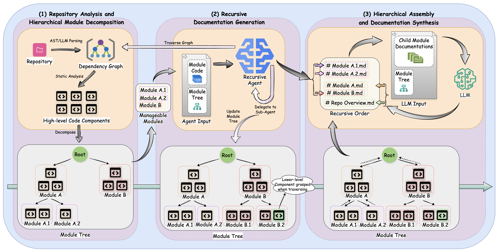
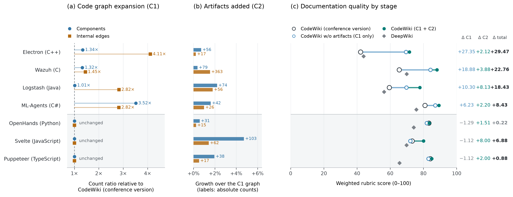

📖 About
Developers spend nearly 58% of their time understanding codebases, yet maintaining comprehensive documentation remains challenging. While recent Large Language Models (LLMs) show promise for function-level documentation, they fail at the repository level, where capturing architectural patterns and cross-module interactions is essential.
CodeWiki is an open-source framework for holistic repository-level documentation across eleven programming languages. It builds the dependency graph, decomposes it into a module hierarchy, and has recursive agents write text and diagrams. Version 2.0 makes the graph more complete, documents build, CI, container, and configuration files alongside code, and keeps documentation current with component-level incremental updates.
🏗️ Framework Architecture

Figure 1: CodeWiki Framework operates in three main phases: (1) Repository analysis and hierarchical decomposition, (2) Recursive documentation generation with dynamic delegation, (3) Hierarchical assembly and synthesis
✨ Key Innovations
Hierarchical Decomposition
Dynamic programming-inspired strategy that breaks complex repositories into manageable modules while preserving architectural coherence. Handles codebases from 86K to 1.4M lines of code.
Recursive Agentic System
Multi-agent architecture with dynamic delegation capabilities that enables adaptive processing based on module complexity, maintaining quality at repository-level scope.
Multi-Modal Synthesis
Generates comprehensive documentation including textual descriptions, architecture diagrams, data flows, and sequence diagrams for holistic understanding.
More Complete Graphs 2.0
Free functions become documentation units. Call resolution in C, C++, Java, and C# is scope-, namespace-, and import-aware, and library calls are filtered out. Ruby and Scala added.
Artifact-Aware Generation 2.0
Dockerfiles, CI workflows, build files, manifests, packaging, configuration, and schemas join the dependency graph and get documented next to the code they build or configure.
Incremental Updates 2.0
codewiki generate --update diffs the saved graph against the current code and patches only the pages the change affects. One commit on svelte: $0.34 instead of $21.48 for a full build.
Subscription Mode & MCP 2.0
Run on a Claude or Codex subscription with no API key, or start codewiki mcp and let Cursor, Claude Desktop, Claude Code, or CodeBuddy drive the toolchain.
🌐 Multilingual Support
📊 Benchmark Results
Evaluated on CodeWikiBench: seven repositories, 486 rubric requirements, the same LLM judge for every system. Scores are weighted rubric scores from 0 to 100. DeepWiki and CodeWiki 1.0 were re-run under the same setting as 2.0 (September 2026), so they differ from the numbers in the paper. README files and docs/ were excluded from CodeWiki's inputs.
Score by Repository
| Repository | Language | LoC | DeepWiki | CodeWiki 1.0 | CodeWiki 2.0 | 2.0 vs 1.0 |
|---|---|---|---|---|---|---|
| OpenHands | Python | 229,909 | 74.12 | 83.31 | 83.53 | +0.22 |
| svelte | JavaScript | 124,576 | 69.83 | 73.21 | 80.09 | +6.88 |
| puppeteer | TypeScript | 136,302 | 65.57 | 84.16 | 85.04 | +0.88 |
| ml-agents | C# | 86,106 | 75.74 | 80.92 | 89.35 | +8.43 |
| logstash | Java | 117,485 | 56.31 | 59.42 | 77.85 | +18.43 |
| Wazuh | C | 1,446,730 | 69.91 | 65.38 | 88.14 | +22.76 |
| Electron | C++ | 184,234 | 43.92 | 42.12 | 71.59 | +29.47 |
| Average | 65.06 | 69.79 | 82.23 | +12.44 |
Score by Topic
| Topic | Requirements | DeepWiki | CodeWiki 1.0 | CodeWiki 2.0 |
|---|---|---|---|---|
| Architecture | 128 | 72.95 | 78.02 | 82.00 |
| Functionality | 211 | 61.62 | 70.46 | 88.65 |
| Operations | 63 | 67.71 | 78.24 | 78.10 |
| Build and deployment | 27 | 62.84 | 28.16 | 71.90 |
| Security | 29 | 48.73 | 64.91 | 83.20 |
| Testing | 12 | 61.43 | 41.93 | 63.25 |
| Performance | 16 | 43.33 | 49.06 | 70.90 |

Figure 2: (a) how much the 2.0 code graph grew over 1.0; (b) nodes and edges added by artifacts; (c) score by stage. "Conference version" is CodeWiki 1.0, "C1 + C2" is CodeWiki 2.0.
The 21-repository study of CodeWiki 1.0 is in the paper.
🎥 Demo Video
Watch CodeWiki in action as it generates comprehensive documentation for a real repository:

CLI Usage Example: Generating documentation with CodeWiki
🚀 Installation & Quick Start
Prerequisites
- Python 3.12+
- Node.js and npm at install time
- Git
- An LLM API key, or a Claude Code / Codex subscription, or an MCP-capable AI IDE
Installation
# Install from source
pip install git+https://github.com/FSoft-AI4Code/CodeWiki.git
# Verify installation
codewiki --versionQuick Start
1. Configure CodeWiki:
# Any OpenAI-compatible endpoint
codewiki config set \
--provider openai-compatible \
--api-key YOUR_API_KEY \
--base-url https://api.example.com/v1 \
--main-model claude-sonnet-4 \
--cluster-model claude-sonnet-4
# Or run on your Claude Code subscription, no API key
codewiki config set --provider claude-code \
--main-model claude-sonnet-4-6 --cluster-model claude-sonnet-4-6
# Verify configuration
codewiki config show
codewiki config validate2. Generate Documentation:
# Navigate to your project
cd /path/to/your/project
# Generate documentation (saved to ./docs/)
codewiki generate
# Generate with GitHub Pages HTML viewer
codewiki generate --github-pages
# Later: refresh only what changed
codewiki generate --update
# Full-featured generation
codewiki generate --create-branch --github-pages --verboseOutput Structure
./docs/
├── overview.md # Repository overview (start here!)
├── module1.md # Module documentation
├── module2.md # Additional modules...
├── module_tree.json # Hierarchical module structure
├── first_module_tree.json # Initial clustering result
├── metadata.json # Generation metadata
├── update_record.json # Decisions of the last --update run
├── temp/ # Saved dependency graph and artifact index
└── index.html # Interactive viewer (with --github-pages)📚 Citation
If you use CodeWiki in your research, please cite our paper:
@inproceedings{hoang-etal-2026-codewiki,
title = "{C}ode{W}iki: Evaluating {AI}{'}s Ability to Generate Holistic Documentation for Large-Scale Codebases",
author = "Hoang, Anh Nguyen and Le-Anh, Minh and Le, Bach and Bui, Nghi D. Q.",
booktitle = "Findings of the {A}ssociation for {C}omputational {L}inguistics: {ACL} 2026",
month = jul,
year = "2026",
address = "San Diego, California, United States",
publisher = "Association for Computational Linguistics",
url = "https://aclanthology.org/2026.findings-acl.288/",
doi = "10.18653/v1/2026.findings-acl.288",
pages = "5812--5827",
}🔗 Resources
This Repo's Docs
Documentation for the CodeWiki repository itself — generated by CodeWiki
Browse Docs